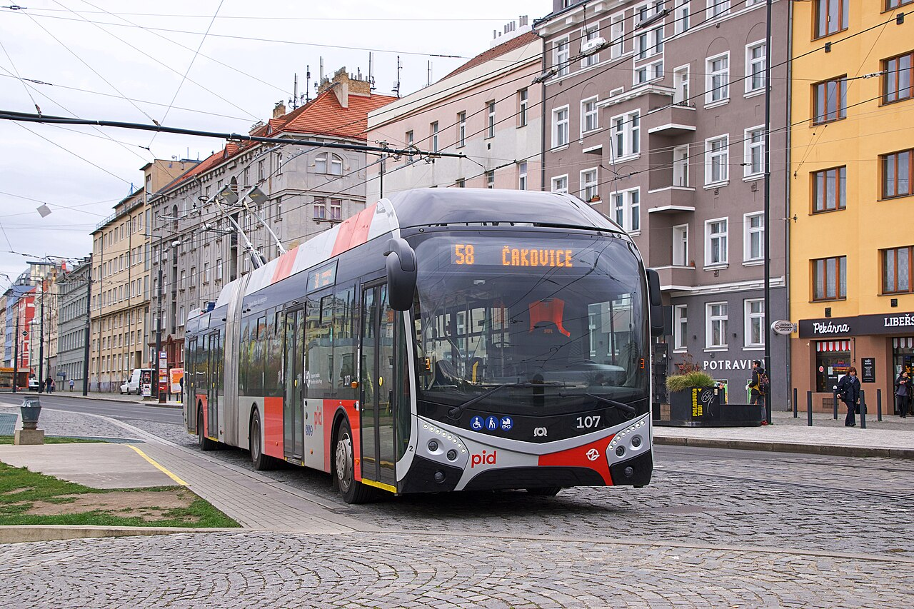

Pražská linka 58 pro OMSI 2
Vítejte na oficiální stránce projektu Pražská linka 58. Jedná se o projekt mapy pro autobusový a trolejbusový simulátor OMSI 2.
Na této stránce najdete informace o vývoji mapy, vozidlech a také launcher pro stažení aktualizací projektu.

SOR TNS 18 na pražské lince 58.
O projektu Pražská linka 58
Projekt Pražská linka 58 se zaměřuje na vytvoření pražské trolejbusové linky pro simulátor OMSI 2.
Do budoucna se plánuje rozšiřování mapy, další úseky trasy a přidávání dalších vozidel.
Součástí projektu je také vlastní launcher, pomocí kterého lze stahovat a aktualizovat obsah potřebný pro mapu.
Stáhnout launcher
Pomocí launcheru můžete stáhnout a aktualizovat obsah projektu Pražská linka 58.
Stáhnout launcher